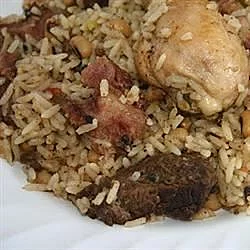

Cook Up

Description
This is a Caribbean One Pot Dish, which includes chicken, fish, rice and vegetables. Serve hot!
Ingredients
- ½ pound chicken wings
- 2 onions, chopped
- ¼ cup chopped celery
- 1 teaspoon browning sauce
- 4 cups water
- 2 cups white rice
- 1 cup pigeon peas
- ½ pound cod
- 3 tomatoes, cubed
- 1 cup grated carrots
- 1 teaspoon salt
Steps
- Rinse chicken, pat dry and season to taste. Heat oil in a large skillet over medium high heat. Add the chicken and brown, then add the onion, celery, and gravy browning and saute until onion and celery are soft. Next, add the water, rice, peas, fish, tomatoes, carrots and salt and stir all together. Cover skillet, reduce heat to medium low and simmer for 25 to 35 minutes or until the rice and peas are soft but grainy.